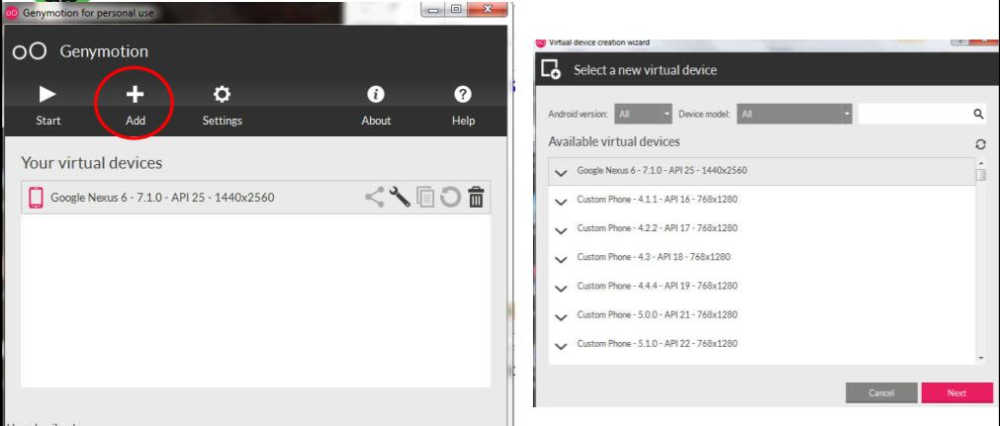

CẤU HÌNH THIẾT BỊ ẢO
* Cách 1: Dùng trình giả lập AVD – Android Virtual Device
- Nhấn biểu tượng AVD Manager trên thanh công cụ, hoặc Tools > Android > AVD Manage
- Chọn Create Virtual Device
- Xác định các đặc điểm phần cứng cho thiết bị: tên, độ phân giải màn hình, dpi, store,… rồi chọn Next
- Chọn phiên bản ROM Android cho thiết bị rồi chọn Next.
- Chờ thiết bị cài đặt xong và chọn Finish.
* Cách 2: Dùng máy ảo Genymotion
- Tạo tài khoản Genymotion rồi đăng nhập
- Chọn máy cần cài và nhấn Next

- Cài đặt plugin trong Android Studio.
- Chọn thiết bị kết nối, rồi chọn OK
* Cách 3: Chạy ứng dụng trên thiết bị thật
- Cài đặt driver cho smartphone: http://developer.samsung.com/galaxy/others/android-usbdriver-for-windows
- Key tìm kiếm: android usb driver
- Kích hoạt Developer mode trên thiết bị Settings About
- Nhấn vào mục Build number 7 lần (lần thứ 3 sẽ có thông báo chuẩn bị mở Developer Mode)